The admin panel's People page
The council's study, 19 November 2026. Previews drawn over the real admin panel on the test stand-in with 15 made-up people. Nothing here is in the book yet. The full record is in brief.md.
Recommended: B's rows that open in place, with A's deleted-row cue and C's words. One person a row with their rights in words; Change opens them in place; leaving and Delete for good sit under one heading that says they wait for Save; the Save bar names who will be deleted. Main downside: one more tap for every change.
On a phone, side by side
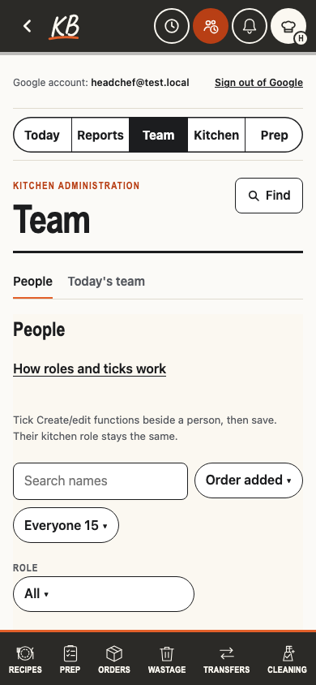
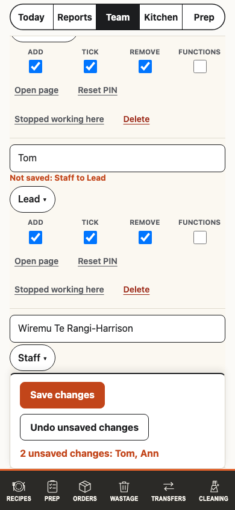
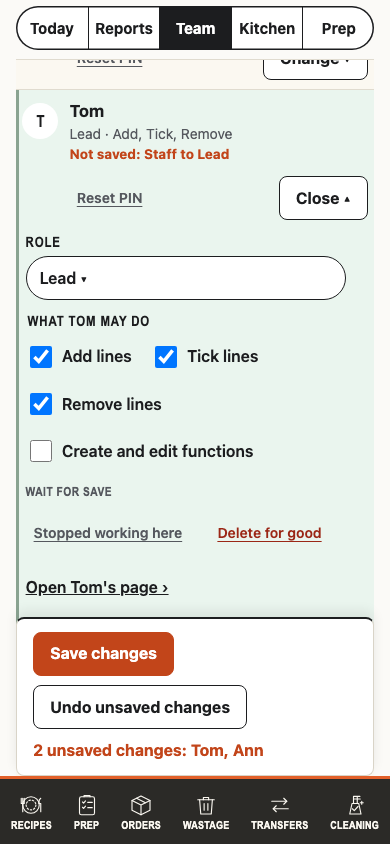
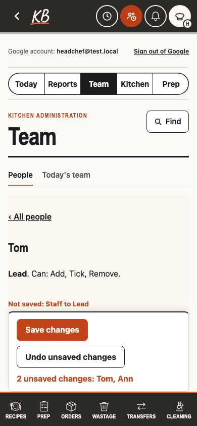
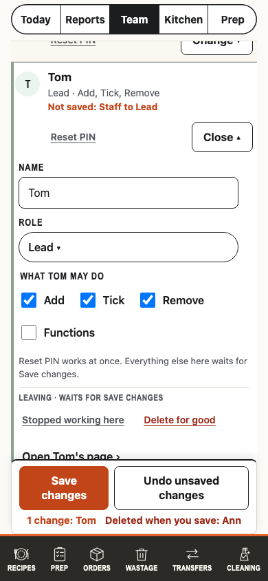
The recommended mix
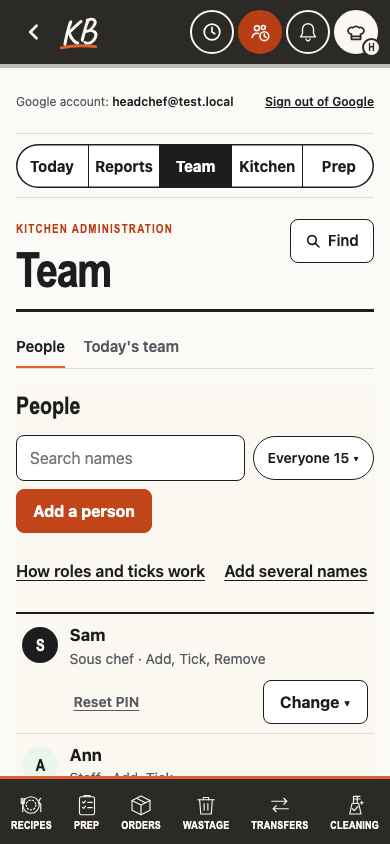
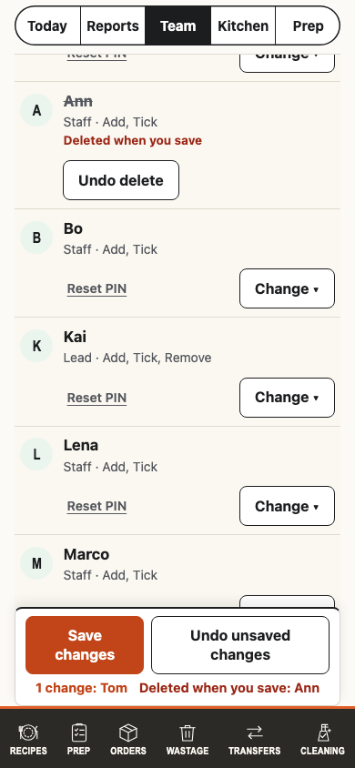
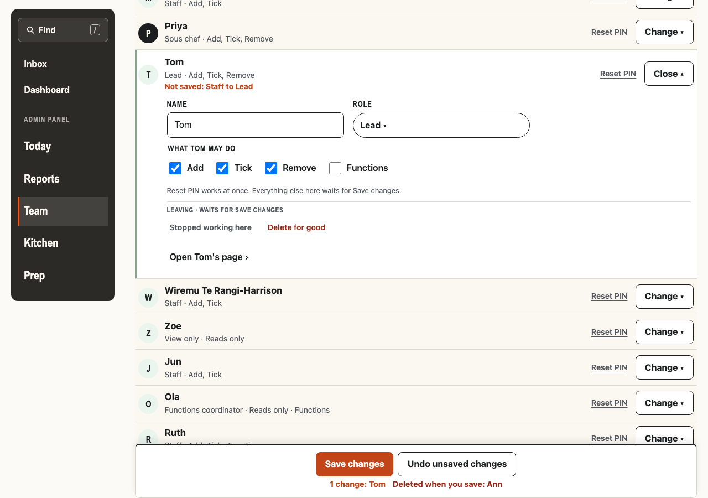
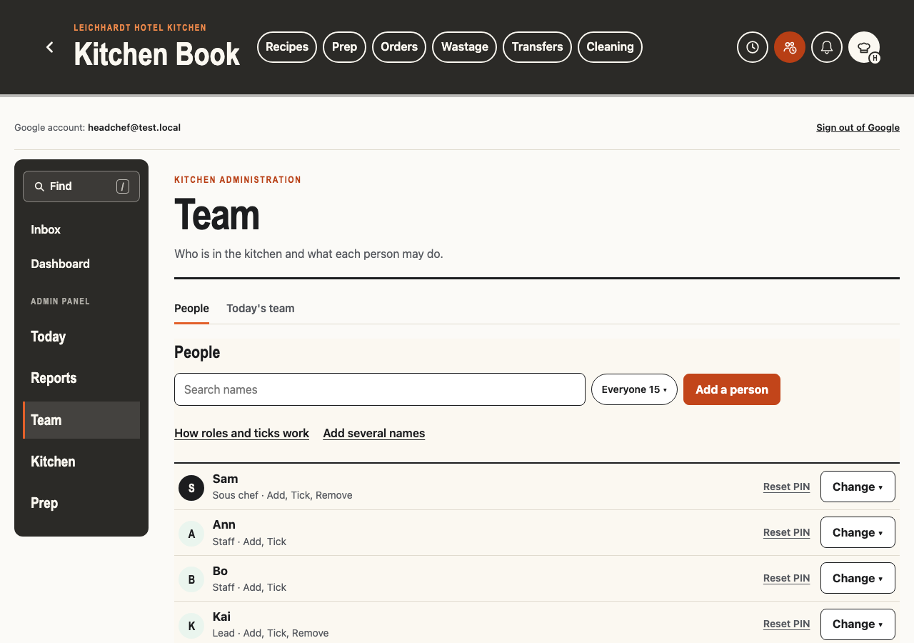
A. Tidy table (changes the least)
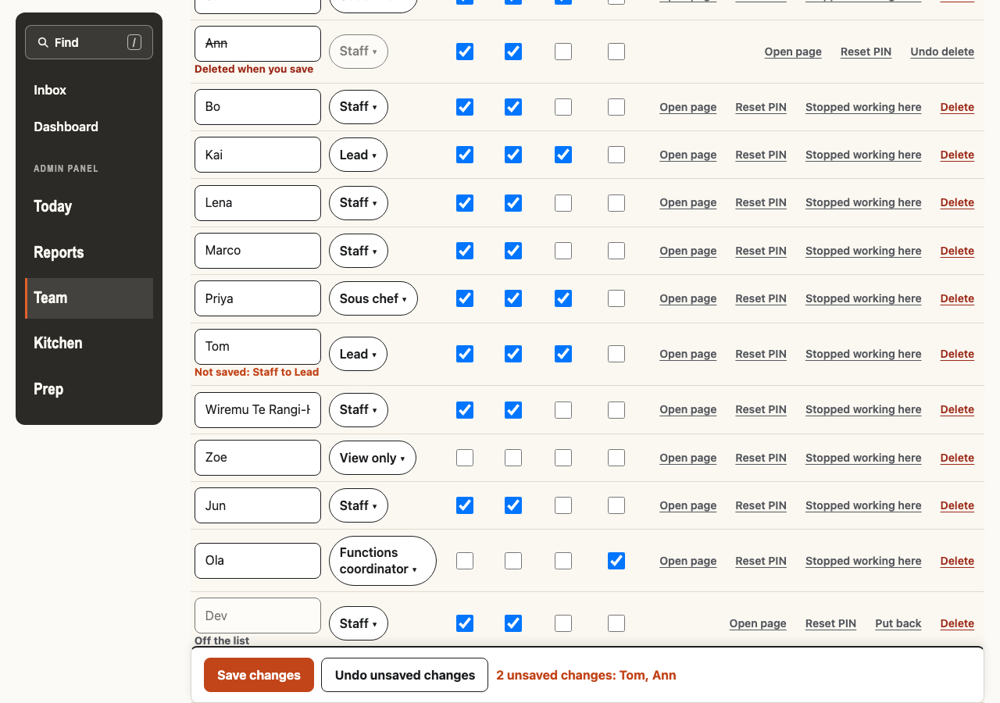
B. Rows that open in place
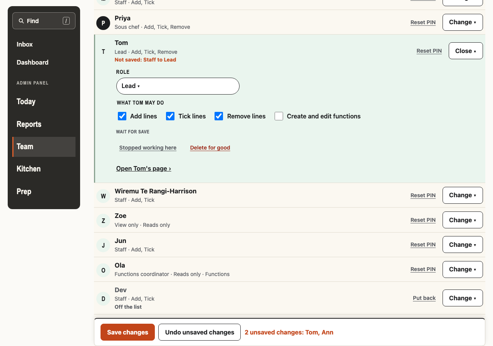
C. Each person's page holds the changes
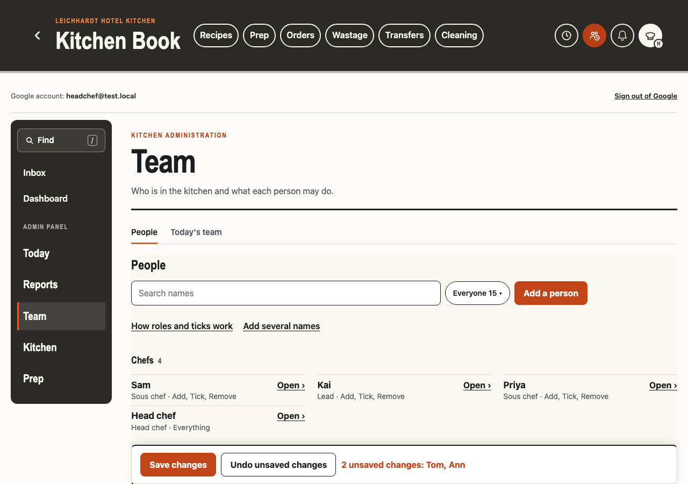
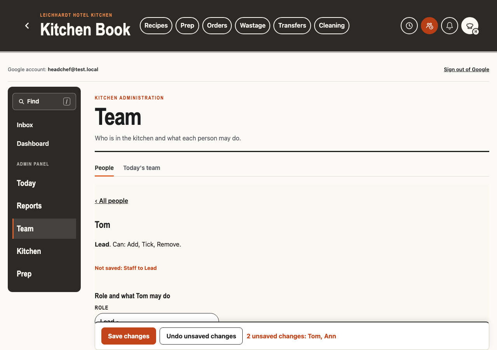
Today
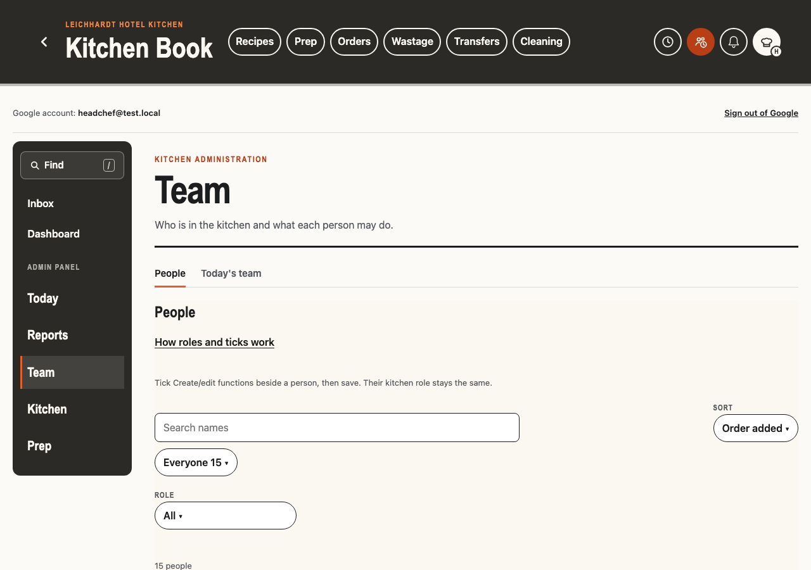
All numbers are previews on the stand-in. The built page is measured again before release.